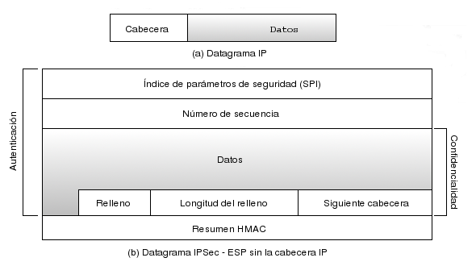

El protocolo de Carga de Seguridad Encapsulada o ESP1.17 proporciona, además de la integridad y autenticación de los datos transportados, la confidencialidad de los mismos. ESP se basa, al igual que AH, en el cálculo del código HMAC sobre el paquete, y adicionalmente en el cifrado del mismo. Dicho cifrado se realiza mediante algoritmos de clave simétrica, con la clave negociada para la asociación de seguridad vigente. El estándar de IPSec obliga a la implementación de los algoritmos NULL1.18 y DES 1.19. En la actualidad, la mayoría de implementaciones de IPSec incluyen algoritmos mucho más potentes y actuales, como 3DES1.20, AES 1.21 o Blowfish1.22.
|

|
ESP encripta y calcula posteriormente el HMAC sobre el paquete IP original, exceptuando la cabecera IP. Esto hace que ESP no tenga los problemas antes mencionados de AH con NAT. Los datos se rellenan hasta completar una longitud múltiplo del tamaño de bloque utilizado. A continuación de ese relleno se incluyen dos campos, la longitud del mismo, y la siguiente cabecera dentro de la carga útil. Esta parte del paquete resultante se encripta, de forma que es imposible averiguar nada sobre los datos en sí mismos. El protocolo proporciona autenticación para esta parte del paquete y para el número de secuencia y el SPI en el resumen que se incluye al final del mismo.
Al igual que con AH, no entraremos a explicar detalladamente la función de las cabeceras que incluye ESP sobre un paquete IPSec, dejando al lector que amplíe la información necesaria en [10].